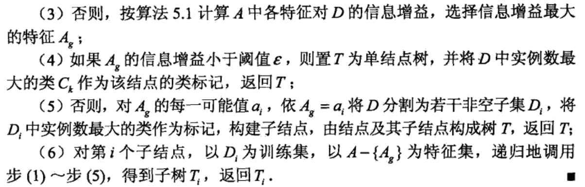
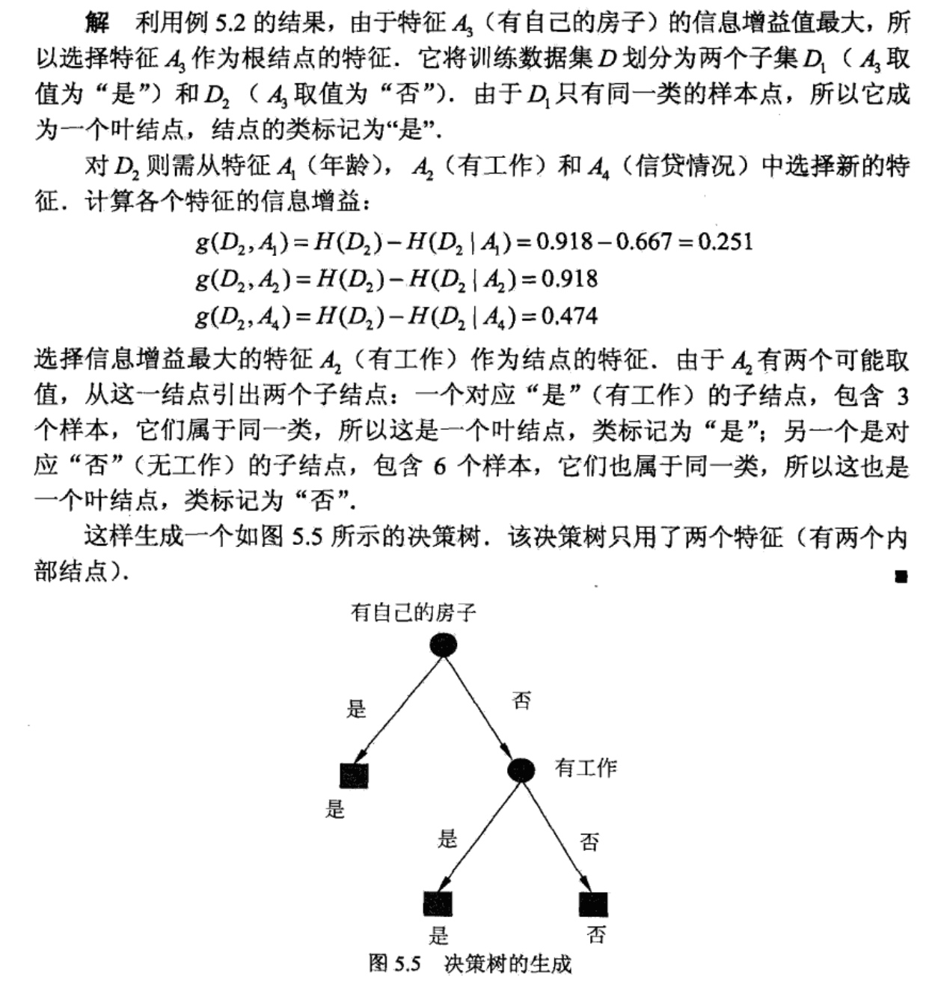
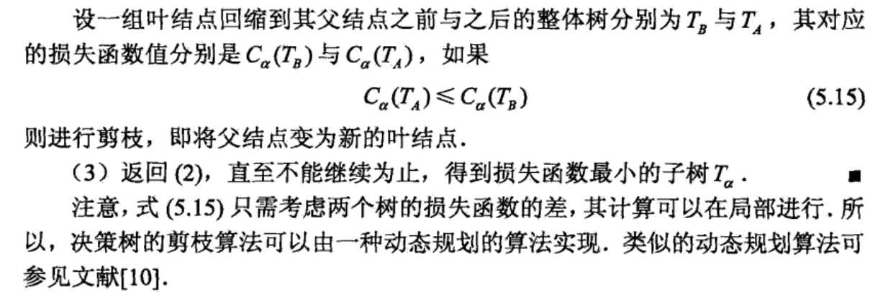

这次将学习决策树的生成算法，首先了解ID3的生成算法，然后再学习C4.5的生成算法，这些都是决策树学习的经典算法。
ID3算法
ID3算法的核心是在决策树各个结点上应用信息增益准则选择特征，递归地构建决策树.具体方法是：从根结点（root node)开始，对结点计算所有可能的特征的信息增益，选择信息增益最大的特征作为结点的特征，由该特征的不同取值建立子结点：再对子结点递归地调用以上方法，构建决策树；直到所有特征的 信息增益均很小或没有特征可以选择为止.最后得到一个决策树.ID3相当于用极大似然法进行概率模型的选择.
该算法的具体步骤为：


这里我们继续使用之前用过的表来进行计算：

利用ID3算法建立决策树：

但是ID3只有树的生成，容易发生过拟合现象。
C4.5d的生成算法
C4.5算法与ID3算法相似，C4.5算法对ID3算法进行了改进.C4.5在生成的过程中，用信息增益比来选择特征(ID3为信息增益).

决策树的剪枝
决策树生成算法递归地产生决策树，直到不能继续下去为止.这样产生的树往往对训练数据的分类很准确，但对未知的测试数据的分类却没有那么准确，即出现过拟合现象.过拟合的原因在于学习时过多地考虑如何提高对训练数据的正确分类，从而构建出过于复杂的决策树.解决这个问题的办法是考虑决策树的复 杂度，对已生成的决策树进行简化.
在决策树学习中将已生成的树进行简化的过程称为剪枝（pruning).具体地，剪枝从已生成的树上裁掉一些子树或叶结点，并将其根结点或父结点作为新的叶结点，从而简化分类树模型.
这里学习一种简单的决策树学习的剪枝算法。
决策树的剪枝往往通过极小化决策树整体的损失函数(loss fimction)或代价函数(costfimction)来实现.设树T的叶结点个数为\(|T|\)，t是树T的叶结点，该叶结点有\(N_{t}\)个样本点，其中k类的样本点有\(N_{tk}个，k=1,2,3...,K,H_i(T)\)为叶结点t上的经验熵，\(a\geq0\)为参数，则决策树学习的损失函数可以定义为:

式(5.14)中，c(t)表示模型对训练数据的预测误差，即模型与训练数据的拟合程度，|T|表示模型复杂度，参数\(a\geq0\)控制两者之间的影响.较大的\(\alpha\)促使选择较简单的模型(树)，较小的\(\alpha\)促使选择较复杂的模型(树).\(\alpha = 0\)意味着只考虑 模型与训练数据的拟合程度，不考虑模型的复杂度.
剪枝，就是当\(\alpha\)确定时，选择损失函数最小的模型，即损失函数最小的子树.当\(\alpha\)值确定时，子树越大，往往与训练数据的拟合越好，但是模型的复杂度就越高；相反，子树越小，模型的复杂度就越低，但是往往与训练数据的拟合不好.损失函数正好表示了对两者的平衡.
可以看出，决策树生成只考虑了通过提高信息增益（或信息增益比）对训练数据进行更好的拟合.而决策树剪枝通过优化损失函数还考虑了减小模型复杂度，决策树生成学习局部的模型，而决策树剪枝学习整体的模型.
式(5.11)或式(5.14)定义的损失函数的极小化等价于正则化的极大似然估计.所以，利用损失函数最小原则进行剪枝就是用正则化的极大似然估计进行模型选择.
下图是决策树的剪枝过程示意图。

剪枝算法如下：

